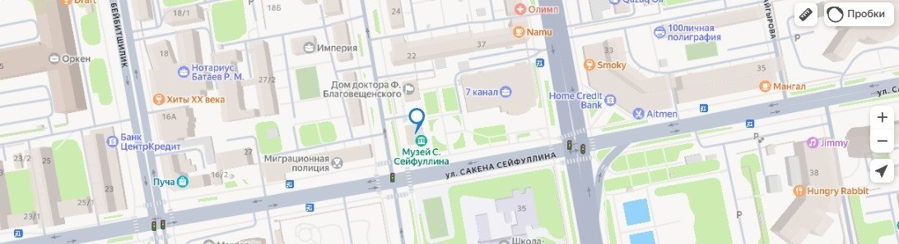

Museum Address
Saken Seifullin MuseumMukan Tolebayev Street, Building 20
Astana, 010000
Republic of Kazakhstan
Phone: +7 (7172) 32-84-60
Email: info@seifullin-museum.kz

Opening Hours
- Tuesday – Sunday: 10:00 AM – 06:00 PM
- Monday: Closed (Maintenance day)
Ticket prices:
- Adults — from 1,200 ₸
- Children — from 500 ₸
- Tours and audioguides — from 1,500 ₸
- Children under 5, veterans, and persons with disabilities — free
Getting Here
The museum can be reached via public bus lines 10, 12, and 21. The nearest bus stop is Tolebayev Street.